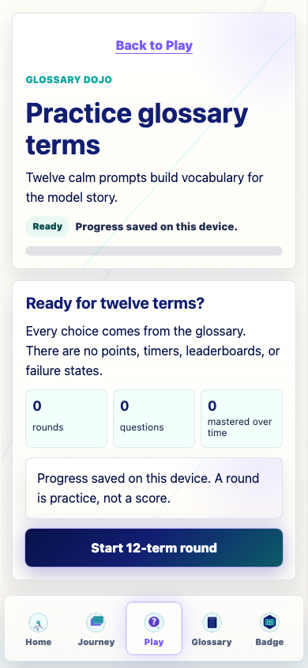
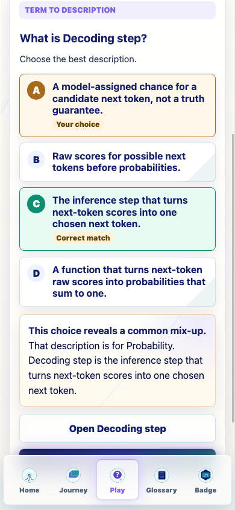
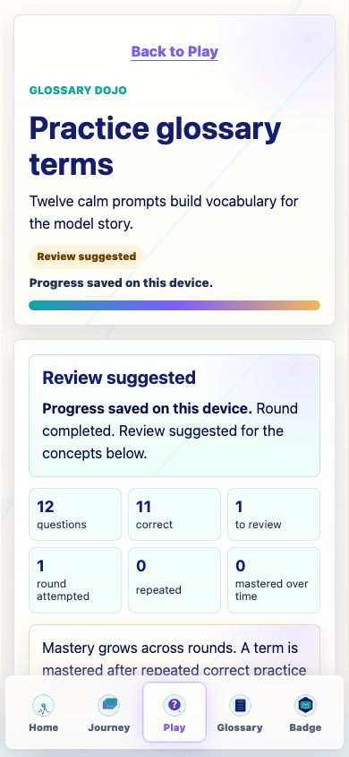
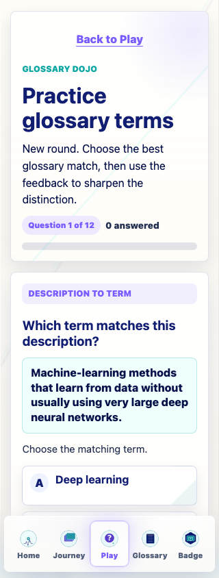
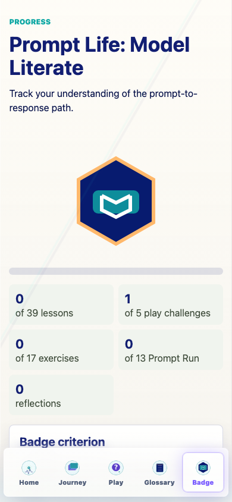
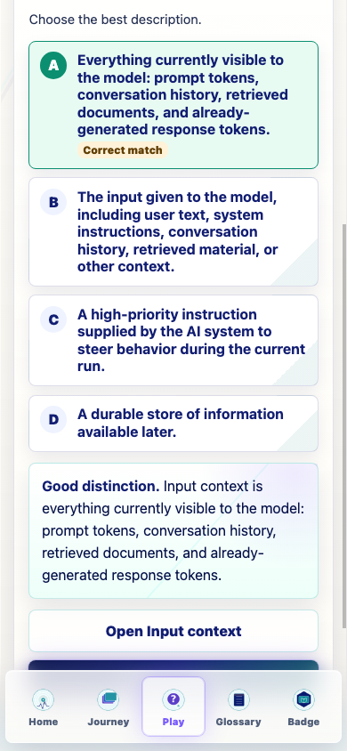

Prompt Life v0.26.3
Glossary Dojo now uses the shared Play Challenge Foundation shell, progress, feedback, completion, and action components while preserving its 12-question glossary learning loop.
Dojo keeps its quiz engine, glossary content, close distractors, repeat rounds, review rounds, and existing progress store. The UI now sits on the shared Play shell and writes attempt/completion summaries through the shared Play progress key.
PlayChallengeShell and PlayChallengeHeader.PlayStatusPill and PlayProgressRail for round status and question progress.PlayFeedbackPanel.PlayCompletionPanel.Good distinction. and This choice reveals a common mix-up.Try another round and Review missed terms.v0.26.3.promptlife.glossaryDojo.v1; shared Play progress records attempt/completion summary only.Shared shell, status pill, progress rail, feedback panel, and shared action row.
Shared shell, question progress rail, status pill, and feedback panel.
Visible feedback starts with calm distinction/mix-up language.
Completion panel shows Round completed or Review suggested.
QA checked shared Dojo progress in the Badge play challenge count.
QA confirmed reset clears shared Play and Dojo progress keys.
npm run typecheck: passed.npm run build: passed with the existing Vite large-chunk warning.npm run build:pages: passed with the existing Vite large-chunk warning.npm run audit:answers: passed.Question 1 of 12, four answer choices, and no horizontal overflow.





Screenshots were captured in isolated browser profiles so real user progress was not changed.